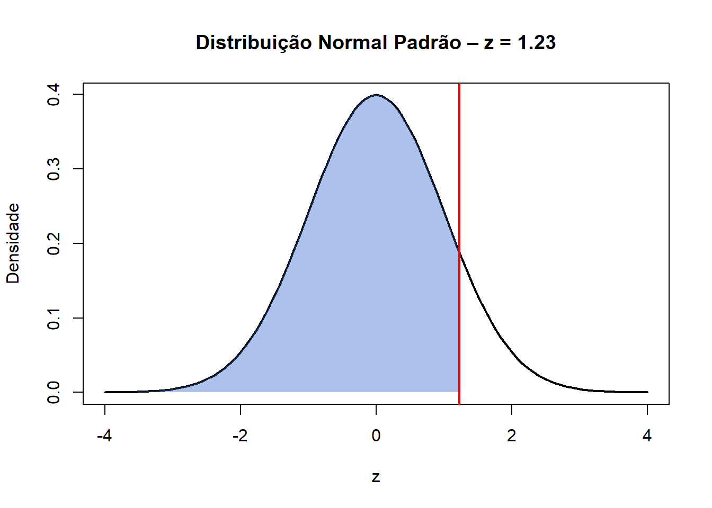

Tabela Z – Versão Interativa
Distribuição Normal Padrão
🔎 Consulta rápida – Tabela Z
Use esta página para consultar valores rapidamente durante a resolução de exercícios.
📊 Tabela Z interativa
📈 Região crítica – visualização gráfica
Selecione um valor de z para visualizar a área acumulada.

📌 A área sombreada representa:
[ P(Z z) ]